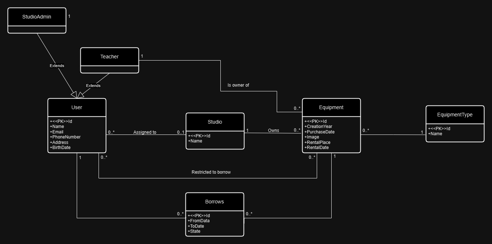

Artists School
- Authors
- Pavlo Butenko
xbuten00@stud.fit.vutbr.cz -
borrow system implementation, borrow CRUD, image upload
- Mykola Vorontsov
xvoron03@stud.fit.vutbr.cz -
studio and equipment type and users CRUD, roles administration, data seeder
- Nikita Koliada
xkolia00@stud.fit.vutbr.cz -
equipment and rental day intervals CRUD, authentication
- Application URL
-
https://equipment-manager-dtg0bkgfetandde2.polandcentral-01.azurewebsites.net/
Users for testing
| Login |
Password |
Role |
| admin_alpha@example.com |
qwerty678 |
Administrator |
| studioadmin_alpha@example.com |
qwerty678 |
Studio Administrator |
| teacher_alpha@example.com |
qwerty678 |
Teacher |
| student_alpha@example.com |
qwerty678 |
Student |
Video
https://youtu.be/yBLORJpYQSg
Implementation
Technologies overview
The project was implemented using C# and ASP.NET MVC framework using Server-Side Rendering and templates. Entity
Framework was used as an ORM framework, because it is de-facto standard for ASP.NET.
Routing is automatically resolved, because of ASP.NET conventional naming of controllers.
Project parts overview
Models
- Studio - model for studio (ateliér), that can be created only by admin.
- Equipment Type - model for different equipment types, that are created by either admins or studio admins.
- Equipment - model for equipment, that can be borrowed by users and created by teachers.
- User - model for user, which also includes id of assigned studio, borrowed equipment
and equipment that is restricted for one's borrowing.
The model inherits ASP.NET model IdentityUser, for correct work of native ASP.NET authentication system.
- Rental Day Interval - model for intervals of the day of the week, when the equipment can be rented.
For example: we can say that selected equipment can be rented in Monday from 7:00 to 9:00 and from 13:00 to 15:00;
or in Thursday from 12:00 to 14:30.
- Borrow - model for one's borrow, that is basically many-to-many relationship between User and Equipment.
It also has a state, which signalize the current state of borrowing.
Repositories
Repositories are middleware classes, that are used to retrieve data from database based on frequent use cases such as get all
records or get one concrete record. There are repositories for every model in the project.
Services
Services used to solve and extract business logic from views. There is only Borrow Service, because only its implementation has
difficult logic.
ViewModels
ViewModels are request form templates for POST actions in controllers. After submitting POST request, controller extract
properties for creating/editing models.
Controllers
There are controllers for every model in the project. They implement CRUD actions. Using dependency injection, they acquire
needed repositories and services. Also, it filters requests based on one's roles.
Views
There are views realisating CRUD actions for every model in the project.
View types:
- Index - view to list all items
- Create - view to create new record
- Details - view to see detailed specification of model
- Edit - view to edit existing record
- Delete - view to delete record
Database

Database Technologies
For development, we were using SQLite database. For production, we are using Azure's SQL Server.
Installation
Software Requirements
- .NET 8.0
- EF Core CLI (dotnet tool install dotnet-ef)
- Microsoft.AspNetCore.Diagnostics.EntityFrameworkCore 8.0.4
- Microsoft.AspNetCore.Identity.EntityFrameworkCore 8.0.4
- Microsoft.AspNetCore.Identity.UI 8.0.4
- Microsoft.EntityFrameworkCore.Sqlite 8.0.4
- MySql.EntityFrameworkCore 8.0.5
- Microsoft.EntityFrameworkCore.SqlServer 8.0.10
- Microsoft.EntityFrameworkCore.Tools 8.0.4
- Microsoft.EntityFrameworkCore.Design 8.0.10
Local Deployment
Commands to launch:
- To setup dev environment: export IsLocalEnvironment=true
- dotnet restore
- dotnet build
- dotnet ef database update
- dotnet run
Known Issues
None.